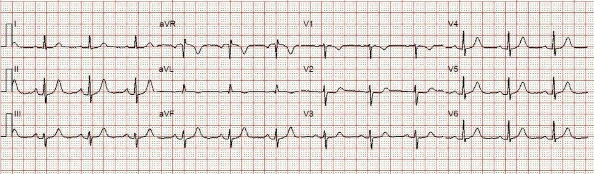
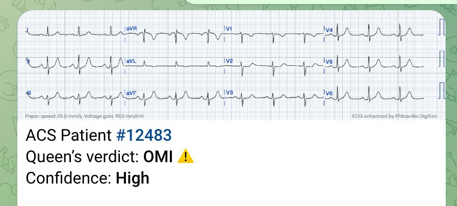
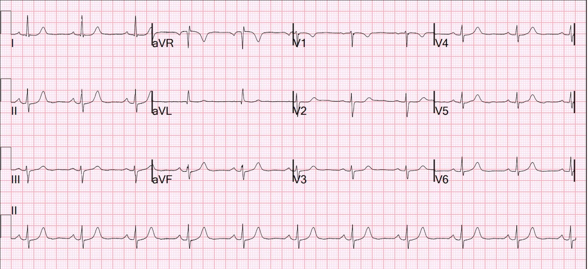
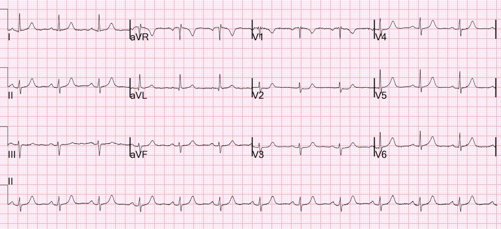
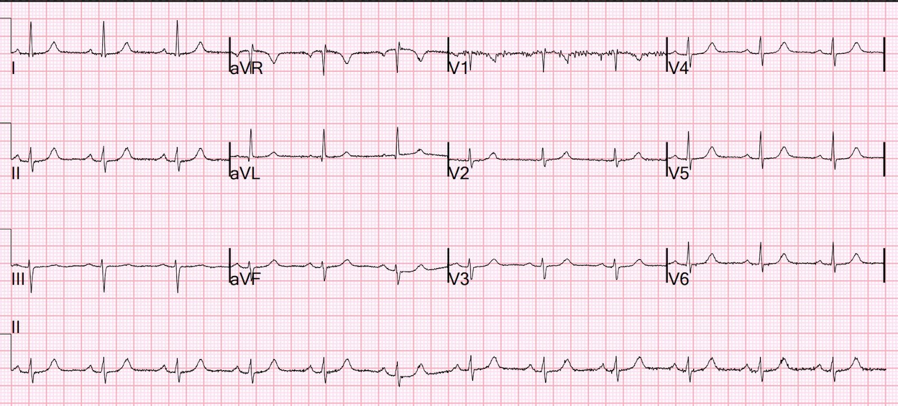
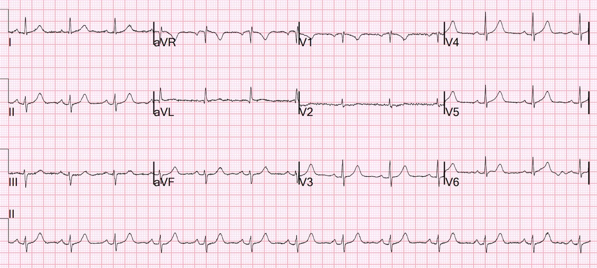
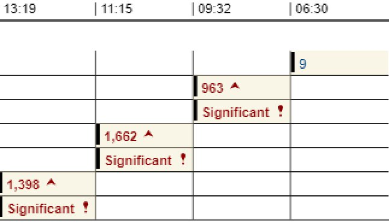
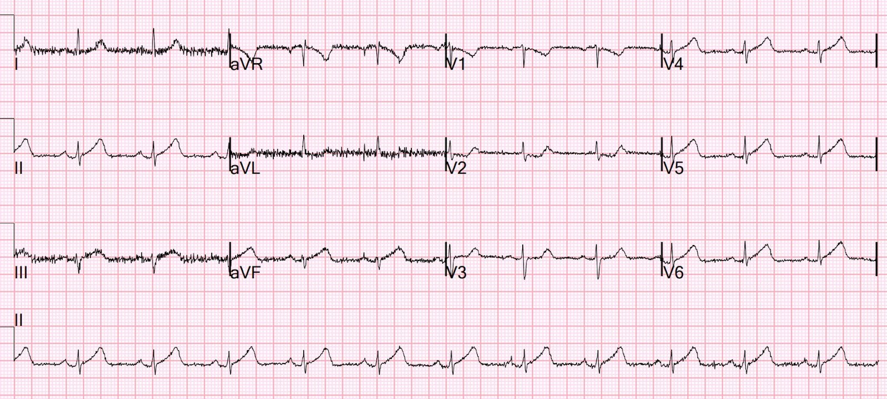
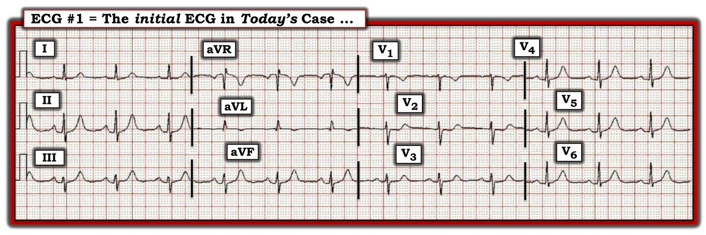

16/11/2023 — Chụp mạch vành cho thấy gì? Siêu âm tim? Chụp CT mạch vành? Bạn giải thích điều này thế nào?
Bản dịch tiếng Việt của bài "What does the angiogram show? The Echo? The CT coronary angiogram? How do you explain this?" – Dr. Smith’s ECG Blog. Giữ nguyên toàn bộ 11 hình ảnh của bản gốc.
Một phụ nữ ngoài 70 tuổi, không có tiền sử tim mạch, đến viện vì đau ngực cấp.
Bà thức dậy lúc khoảng 4:45 sáng đêm qua (3 giờ trước khi đến viện) với cơn đau khởi phát ở giữa lưng. Bà mô tả cơn đau âm ỉ/như chuột rút.
Trong khoảng một giờ sau đó, cơn đau chuyển thành cảm giác đè nặng ở ngực. Bà nói cảm giác này ở giữa xương ức và như bị bóp chặt. Ban đầu đau lan xuống cánh tay trái. Sau một thời gian, cơn đau lan sang cả cánh tay bên kia và lên hàm. Bà cũng có khó thở.
Bà được xe cứu thương đưa đến và được dùng aspirin cùng nitroglycerin trên đường đi. Bà nói thuốc chỉ giúp giảm đau rất ít.
Bà vẫn còn cảm giác đè nặng lan ra cánh tay phải và bên trái cổ. Theo bà biết thì bà không có tiền sử tim mạch nào trước đây
Đã gọi 911 và đây là điện tâm đồ trước viện của bà:


Bạn nghĩ gì?
Có các sóng T ở thành dưới và thành bên có thể là sóng T tối cấp, và tôi chỉ biết chắc chắn là như vậy nhờ ST chênh xuống ở V2: đi kèm các sóng T này, ST chênh xuống (STD) này là chẩn đoán OMI thành sau.
Queen of Hearts cũng nói như vậy:


Ứng dụng Queen of Hearts PM Cardio hiện đã có ở Liên minh châu Âu (đã được CE phê duyệt), trên App Store và Google Play.
Với người Mỹ, bạn cần chờ FDA. Nhưng trong lúc chờ đợi:
BẠN CÓ CƠ HỘI ĐƯỢC TRUY CẬP SỚM BOT AI PM Cardio!! (ỨNG DỤNG AI OMI CỦA PM CARDIO)
Nếu bạn muốn bot này giúp bạn chẩn đoán sớm OMI và cứu bệnh nhân cùng cơ tim của họ, bạn có thể đăng ký nhận phiên bản beta sớm của bot tại đây. Bot chưa phát hành, nhưng đây là cách để bạn có tên trong danh sách.
https://share-eu1.hsforms.com/18cAH0ZK0RoiVG3RjC5dYdwfyfsg (biểu mẫu đăng ký nhận bản beta sớm của bot)
Ca bệnh tiếp diễn
Bà đến khoa cấp cứu (ED) và đây là điện tâm đồ đầu tiên tại ED. Tôi không biết cơn đau của bà có đang đỡ hơn hay không.


ST chênh xuống dốc xuống rất đáng nghi OMI, nhưng chưa đủ để chẩn đoán. So với điện tâm đồ đầu tiên, tôi đoán là động mạch đang tái tưới máu.
Queen không còn cho rằng đây là OMI nữa.
Tại ED, lúc 3,5 giờ


Các sóng T đã nhỏ lại, nhưng vẫn còn ST chênh xuống dai dẳng ở V2. Đây là OMI cho đến khi chứng minh được điều ngược lại.
Tại ED, lúc 3,75 giờ


Toàn bộ sóng T tối cấp và ST chênh xuống đã hết.
Tại ED, lúc 5,5 giờ


Sóng T đang lớn dần trở lại


Bệnh nhân được chụp mạch vành vào khoảng 7 giờ sau khi đến viện.
Chụp mạch vành
Không có bệnh động mạch vành thượng tâm mạc gây tắc nghẽn
Không thể loại trừ các nguyên nhân tăng troponin không do hội chứng vành cấp (ACS), bao gồm co thắt mạch vành, bệnh cơ tim do stress, bệnh vi mạch, v.v.
Siêu âm tim
Phân suất tống máu thất trái ước tính là 56 %.
Rối loạn vận động thành mới xuất hiện:
Rối loạn vận động thành khu trú - thành trước bên.
Rối loạn vận động thành khu trú - thành dưới bên (đoạn xa).
Điện tâm đồ sau thông tim:


Bây giờ lại có sóng T tối cấp, và ST chênh xuống tái xuất hiện ở V2
Thông thường điện tâm đồ này sẽ được coi là chẩn đoán OMI cho đến khi chứng minh được điều ngược lại
Không đo thêm troponin, nhưng có vẻ như đã có OMI tái phát
Ngày hôm sau: Bệnh nhân được chụp CT mạch vành (CTCA)
HÌNH THÁI VÀ CHỨC NĂNG TIM:
1. Thể tích cuối tâm trương thất trái: 99 ml.
2. Thể tích tâm thu thất trái: 49 ml.
3. Thể tích nhát bóp: 50 ml.
4. Phân suất tống máu thất trái: 50 %.
5. Vận động thành, dày thành: Không phát hiện rối loạn vận động thành.
Độ dày thành bình thường. Có vùng giảm tưới máu ở thành trước
bên thất trái, lan vào các cơ nhú, thấy rõ nhất
trên loạt ảnh thì muộn.
ĐỘNG MẠCH VÀNH:
Lần chụp này không được thiết kế riêng để đánh giá động mạch vành, lưu ý
bệnh nhân vừa được chụp mạch vành chẩn đoán. LAD, động mạch mũ và RCA có vẻ
thông. LAD đoạn xa thuôn nhỏ tương đối đột ngột, nhưng không thấy chỗ mạch bị cắt cụt
khu trú nào.
NHẬN ĐỊNH:
1. Giảm tưới máu khu trú ở một phần thành trước bên thất
trái và các cơ nhú.
2. Không phát hiện rối loạn vận động thành. Phân suất tống máu tính được là 50%.
3. Không thực hiện đánh giá chi tiết động mạch vành.
Kết quả chụp đã được đọc và trao đổi với BS. Simegn khoa tim mạch, người đã xem lại phần tim.
Điều này gợi ý có thêm thiếu máu cục bộ nặng. Có vẻ như troponin lẽ ra đã tăng cao hơn nhiều. Vậy mà các động mạch vẫn thông.
Đây có phải là tắc mạch nhỏ? Co thắt mạch ở phía hạ lưu?
Không chụp được MRI vì bệnh nhân sợ không gian hẹp
Ghi chú của khoa tim mạch:
Bệnh cảnh chung phù hợp với chẩn đoán MINOCA, do đó sẽ điều trị bằng liệu pháp kháng tiểu cầu kép (DAPT) trong 1 tháng cùng với các điều trị nội khoa theo hướng dẫn khác như dưới đây
NSTEMI — MINOCA (nhồi máu cơ tim với động mạch vành không tắc nghẽn — myocardial infarction with nonobstructive coronary arteries)
- Siêu âm tim qua thành ngực (TTE) làm sáng nay: rối loạn vận động thành trước bên
- Isosorbide dinitrate 20 mg ngày ba lần – có thể ngừng vì có bằng chứng MINOCA
- Metoprolol
- Atorvastatin 20 mg mỗi ngày
- Clopidogrel 75 mg mỗi ngày
- Bắt đầu ASA 81 mg mỗi ngày
- Mục tiêu K ~4,5, Mg ~2,5
MINOCA
Ở đây tôi không có đủ thời gian để viết một bài tổng quan về MINOCA.
Nhưng có vài điểm:
Định nghĩa MINOCA đòi hỏi bệnh nhân phải đáp ứng cả ba tiêu chuẩn chẩn đoán chính, cụ thể là:
1) Định nghĩa toàn cầu về nhồi máu cơ tim cấp (Universal Definition of Acute MI) (đòi hỏi phải có thiếu máu cục bộ);
2) có động mạch vành không tắc nghẽn trên chụp mạch (định nghĩa là không có hẹp động mạch vành ≥50%) ở bất kỳ động mạch nào có thể liên quan đến nhồi máu; và
3) không có một nguyên nhân đặc hiệu, rõ ràng về lâm sàng nào khác giải thích được bệnh cảnh cấp tính.
MINOCA có thể do: co thắt mạch vành, rối loạn chức năng vi mạch vành, phá vỡ mảng xơ vữa, huyết khối/thuyên tắc mạch vành tự phát, và bóc tách động mạch vành; các rối loạn cơ tim, bao gồm viêm cơ tim, bệnh cơ tim takotsubo và các bệnh cơ tim khác.
Chúng ta biết rằng phần lớn nhồi máu cơ tim cấp típ 1 do nứt vỡ mảng xơ vữa và huyết khối xảy ra ở các tổn thương hẹp dưới 50% (xem tài liệu tham khảo của Libby). Điều này vẫn đúng dù đã biết các chỗ hẹp khít hơn dễ tạo huyết khối hơn. Lý do mang tính quần thể: trong dân số có nhiều chỗ hẹp mức độ vừa hơn nhiều so với chỗ hẹp khít, nên nhiều ca nhồi máu cơ tim xuất phát từ những chỗ hẹp vừa này hơn.
Ngay cả ở những bệnh nhân có chỗ hẹp vừa bị huyết khối, phần lớn phim chụp mạch vành cho thấy hẹp trên 50% sau biến cố. Tuy nhiên, hoàn toàn có thể hình dung rằng nhiều huyết khối ở các tổn thương không gây tắc nghẽn đã tan hoàn toàn và không để lại chỗ hẹp trên phim chụp mạch vành trong ngày hoặc ngày hôm sau. Huyết khối mạch vành rồi tan hoàn toàn rõ ràng là có thể xảy ra, nhưng mức đóng góp của nó vào MINOCA thực sự chưa được biết, vì hiếm khi được khảo sát đầy đủ. Vấn đề này khó nghiên cứu vì hình ảnh động mạch trên chụp mạch không hoàn hảo, và không phải lần chụp mạch vành nào cũng dùng siêu âm trong lòng mạch (IVUS) để đánh giá mảng xơ vữa không nhìn thấy được hoặc mảng xơ vữa bị nứt vỡ và loét mà chụp mạch không thấy được.
Hơn nữa, bệnh cảnh lâm sàng đau ngực đột ngột, các dấu hiệu điện tâm đồ điển hình của tắc mạch (sóng T tối cấp trong ca này), các dấu hiệu điện tâm đồ theo vùng phân bố của một động mạch vành, troponin tăng rồi giảm với đỉnh nằm trong khoảng điển hình của STEMI/OMI, và rối loạn vận động thành mới ở đúng vùng mà điện tâm đồ chỉ ra, phải được coi là do huyết khối mạch vành. Mức độ hẹp không phải là yếu tố dự báo tốt cho huyết khối, và tổn thương thủ phạm có thể không nhìn thấy được. Ngay cả khi có một chỗ hẹp khít, đó cũng không phải là bằng chứng của tổn thương thủ phạm, vì nhiều người vốn đã có những chỗ hẹp khít cố định từ trước. Có thể có một chỗ hẹp khít mạn tính và một tổn thương không gây tắc nghẽn đã bị huyết khối.
Các nghiên cứu hiện nay về MINOCA đã đánh giá tiên lượng của những bệnh nhân này, báo cáo tỷ lệ tử vong do mọi nguyên nhân sau 12 tháng là 4,7% (KTC 95%, 2,6–6,9),3 và các nghiên cứu so sánh nhất quán cho thấy tiên lượng tốt hơn so với những người bị nhồi máu cơ tim cấp (AMI) kèm bệnh động mạch vành tắc nghẽn.
Lindahl và cs. ghi nhận các điều trị nhồi máu cơ tim điển hình như statin và thuốc ức chế men chuyển (ACE) có liên quan đến giảm đáng kể tử vong sau 1 năm ở bệnh nhân MINOCA, điều này gợi ý rằng họ thực sự có sinh lý bệnh tương tự bệnh nhân nhồi máu cơ tim có bệnh mạch vành tắc nghẽn.
Trích từ UpToDate:
Huyết khối cấp tại vị trí mảng xơ vữa lệch tâm không gây tắc nghẽn — Nhiều mảng xơ vữa phát triển ra phía ngoài thay vì lấn vào lòng động mạch. Những mảng xơ vữa “tái cấu trúc dương tính” (positively-remodelled) này thường giàu lipid và có vỏ xơ mỏng; chúng dễ bị nứt vỡ vào lòng mạch [1,9,10]. Huyết khối thoáng qua và bán phần tại vị trí một mảng xơ vữa không gây tắc nghẽn, sau đó tự tiêu sợi huyết và gây thuyên tắc phía xa, có thể là một trong những cơ chế gây ra MINOCA. Tương tự, mòn mạch vành kèm mất lớp nội mô bề mặt, có thể do tích tụ hyaluronan và bạch cầu trung tính, cũng có thể gây MINOCA [1,11]. (Xem “Mechanisms of acute coronary syndromes related to atherosclerosis”.)
Lý do những ca này bị xếp vào MINOCA là vì chụp mạch vành có giá trị hạn chế trong việc làm rõ huyết khối liên quan đến mảng xơ vữa là nguyên nhân gây huyết khối, do độ phân giải thấp và do kỹ thuật này không khảo sát được lòng mạch. Vì vậy, các phương tiện hình ảnh học trong lòng mạch vành có vai trò then chốt trong bối cảnh này. Nứt vỡ hoặc mòn mảng xơ vữa đã được chẩn đoán bằng siêu âm trong lòng mạch ở khoảng 40 phần trăm phụ nữ bị MINOCA [12]. Chụp cắt lớp quang học (OCT), nhờ độ phân giải cao, có thể cung cấp thêm thông tin [10,13].
Vì MINOCA đi kèm nguy cơ biến cố tim mạch tái phát theo thời gian, tương đương với nguy cơ ở bệnh nhân hội chứng vành cấp (ACS) có xơ vữa gây tắc nghẽn [5,14,15], những bệnh nhân này cần điều trị kháng tiểu cầu kép trong 12 tháng và statin. Đặc biệt, điều trị hạ lipid lâu dài bằng statin sau nhồi máu cơ tim có liên quan đến tăng đáng kể độ dày vỏ xơ, song song với giảm thành phần lipid của mảng xơ vữa [16]. (Xem “Prevention of cardiovascular disease events in those with established disease (secondary prevention) or at very high risk”.)
Trích từ Gue và cs.
MINOCA biểu hiện STEMI so với MINOCA biểu hiện NSTEMI
STEMI xảy ra khi có thiếu máu cục bộ xuyên thành do tắc hoàn toàn thoáng qua hoặc kéo dài động mạch vành liên quan đến nhồi máu. Ở bệnh nhân nhồi máu cơ tim không ST chênh lên (NSTEMI), vùng nhồi máu nằm dưới nội tâm mạc. Khác biệt sinh lý bệnh này dường như cũng hiện diện trong nhóm MINOCA. Dữ liệu sổ bộ cho thấy 6–11% bệnh nhân nhồi máu cơ tim cấp có động mạch vành không tắc nghẽn. Trong y văn, MINOCA có xu hướng biểu hiện dưới dạng NSTEMI thường gặp hơn STEMI: tỷ lệ MINOCA được báo cáo ở bệnh nhân NSTEMI là khoảng 8–10%, còn ở các nhóm STEMI là 2,8–4,4%. Điều này dẫn đến việc bệnh nhân MINOCA biểu hiện STEMI ít được đại diện trong y văn. Phần lớn các nghiên cứu khảo sát các nhóm ACS không phân biệt, chỉ một số ít cung cấp dữ liệu riêng. Các nghiên cứu này cho thấy tỷ lệ tử vong sau 1 năm của MINOCA biểu hiện STEMI là 4,5%, so với tỷ lệ tử vong 4,7% ở bệnh nhân ACS MINOCA không chọn lọc. Căn nguyên nền của MINOCA tương tự nhau giữa nhóm biểu hiện STEMI và toàn bộ bệnh nhân MINOCA có ACS, với căn nguyên không do mạch vành chiếm 60–70% số người biểu hiện STEMI và 76% bệnh nhân ACS không chọn lọc.
Tài liệu tham khảo:
1. Lindahl B, Baron T, Erlinge D, và cs. Medical Therapy for Secondary Prevention and Long-Term Outcome in Patients With Myocardial Infarction With Nonobstructive Coronary Artery Disease. Circulation [Internet] 2017;135(16):1481–9. Truy cập tại: http://dx.doi.org/10.1161/CIRCULATIONAHA.116.026336 https://www.ahajournals.org/doi/epdf/10.1161/CIRCULATIONAHA.116.026336
2. Pasupathy S, Tavella R, Beltrame JF. Myocardial Infarction With Nonobstructive Coronary Arteries (MINOCA): The Past, Present, and Future Management [Internet]. Circulation. 2017;135(16):1490–3. Truy cập tại: http://dx.doi.org/10.1161/CIRCULATIONAHA.117.027666 https://www.ahajournals.org/doi/epdf/10.1161/CIRCULATIONAHA.117.027666
3. Gue YX, Kanji R, Gati S, Gorog DA. MI with Non-obstructive Coronary Artery Presenting with STEMI: A Review of Incidence, Aetiology, Assessment and Treatment. Eur Cardiol [Internet] 2020;15:e20. Truy cập tại: http://dx.doi.org/10.15420/ecr.2019.13
4. Libby P. Mechanisms of acute coronary syndromes and their implications for therapy. N Engl J Med [Internet] 2013;368(21):2004–13. Truy cập tại: http://www.ncbi.nlm.nih.gov/entrez/query.fcgi?cmd=Retrieve&db=PubMed&dopt=Citation&list_uids=23697515
Đọc thêm về MINOCA trong bài này:
Hyperacute T-waves — missed. Myocardial Infarction with Non-Obstructive Coronary Arteries (MINOCA) may be due to transient thrombotic Occlusion MI. (Sóng T tối cấp — bị bỏ sót. Nhồi máu cơ tim với động mạch vành không tắc nghẽn (MINOCA) có thể là do nhồi máu cơ tim do tắc (OMI) bởi huyết khối thoáng qua.)

===================================
BÌNH LUẬN CỦA TÔI, bởi KEN GRAUER, MD (16/11/2023):
===================================
Tôi ngờ rằng thực thể được gọi là MINOCA (nhồi máu cơ tim với động mạch vành không tắc nghẽn — MI with Non-Obstructive Coronary Arteries) — chưa được nhiều bác sĩ lâm sàng hiểu đầy đủ.
- Tôi đã ngạc nhiên khi biết rằng ước tính 5-15% bệnh nhân (tùy theo quần thể được nghiên cứu) được chẩn đoán hoặc STEMI hoặc NSTEMI — hóa ra lại là MINOCA, trong đó thông tim không phát hiện được động mạch liên quan đến nhồi máu nào (tức là không có mạch “thủ phạm” nào hẹp ít nhất 50%) — và không tìm thấy căn nguyên toàn thân rõ ràng nào giải thích được lý do bệnh nhân vào viện (Tamis-Holland và cs.: Tuyên bố khoa học của AHA về MINOCA — Circulation 139:e891-e908, 2019 — Broncano và cs. — RadioGraphics 41:8-31, 2021 — và — Sykes và cs. — Interventional Card Review 16:e10, 2021).
Vì vậy tôi rất hứng thú với ca hôm nay — trong đó một phụ nữ ngoài 70 tuổi đến viện vì mới đau ngực (Chest Pain — CP), kèm theo troponin tăng đáng kể (dù phân suất tống máu vẫn khá tốt = 56%) — nhưng không có bệnh mạch vành tắc nghẽn trên thông tim. Một số bất thường khác đã được ghi nhận:
- Siêu âm tim — cho thấy rối loạn vận động thành khu trú ở vùng trước bên và dưới bên.
- CTCA — cho thấy một vùng giảm tưới máu ở thành trước bên thất trái, lan vào các cơ nhú (thấy rõ nhất trên loạt ảnh thì muộn).
- Đáng tiếc là — MRI tim không thực hiện được vì bệnh nhân sợ không gian hẹp.
Do không có bệnh mạch vành tắc nghẽn trên thông tim — bệnh nhân được chẩn đoán MINOCA. Bà có vẻ diễn tiến tốt, và được xuất viện với kế hoạch dự phòng thứ phát theo kinh nghiệm gồm thuốc chẹn ß, nitrat, DAPT (liệu pháp kháng tiểu cầu kép — Dual AntiPlatelet Therapy), và các biện pháp giảm yếu tố nguy cơ — kèm theo dõi ngoại trú chặt chẽ.
============================================
Xét đến chẩn đoán cuối cùng là MINOCA — tôi thấy điện tâm đồ ban đầu của bệnh nhân này đặc biệt đáng chú ý.
- Do bệnh nhân này đến viện vì đau ngực mới xuất hiện — khi nhìn thấy điện tâm đồ ban đầu của bà, tôi ngay lập tức biết rằng có chỉ định thông tim kịp thời. Để rõ ràng, trong Hình 1 — tôi đã sao chép lại bản ghi ban đầu đó.
- Dù vậy — tôi nghĩ có một số đặc điểm bất thường trong điện tâm đồ #1 đáng được nhắc đến.


Điện tâm đồ ban đầu trong ca bệnh hôm nay:
Nhịp trong điện tâm đồ #1 là nhịp xoang — các khoảng và trục bình thường, không có lớn buồng tim. Về Thay đổi Q–R–S–T:
- Sóng Q — Thấy một sóng q rất nhỏ (có lẽ không có ý nghĩa) ở chuyển đạo aVL.
- Tăng tiến sóng R — bình thường (với vùng chuyển tiếp, nơi sóng R trở nên cao hơn độ sâu của sóng S — xảy ra bình thường, ở đây là giữa chuyển đạo V3 và V4).
Về Thay đổi sóng ST-T:
- Sóng T tối cấp xuất hiện ở 6 chuyển đạo! Cụ thể — sóng T nhọn và cao không tương xứng ở các chuyển đạo II,III,aVF — và, ở các chuyển đạo V4,V5,V6. Đoạn ST thẳng đuỗn ở các mức độ khác nhau ở 6 chuyển đạo này — tạo nên một góc gấp bất thường “bắt mắt” tại chỗ nối giữa đoạn ST và phần khởi đầu của sóng T ở 6 chuyển đạo này.
Mỗi chuyển đạo trong 6 chuyển đạo còn lại ở điện tâm đồ #1 cũng đều bất thường — nhưng không hẳn gợi ý “tính cấp tính” ở cùng mức như các chuyển đạo dưới và các chuyển đạo trước tim phía bên.
- Có ST dẹt kín đáo ở chuyển đạo I.
- QRS biên độ rất nhỏ ở chuyển đạo aVL biểu hiện một sóng q nhỏ, hẹp — một gợi ý ST dạng vòm (coving) nhưng không chênh lên — và sóng T đảo ngược nông, có lẽ là bất thường vì QRS chủ yếu dương.
- Sóng T ở chuyển đạo V1 có thể đảo ngược một cách bình thường — nhưng thường không kèm mức độ ST dạng vòm như thế này, cũng không có độ sâu sóng T đảo ngược như thế này. Điều này kín đáo và không đặc hiệu — nhưng có lẽ không “bình thường”.
- Có ST chênh lên 1 mm ở chuyển đạo aVR — mà trong bối cảnh ST dẹt ở hầu hết các chuyển đạo khác, gợi ý có thể có một phần thiếu máu cục bộ dưới nội tâm mạc do bệnh mạch vành nền.
- Dù đã nói như trên — những bất thường nổi bật nhất trong 6 chuyển đạo còn lại này là ST-T ở các chuyển đạo V2,V3, gợi ý OMI thành sau vừa mới xảy ra. Đặc biệt lưu ý đoạn ST dẹt thẳng (dạng bậc thềm) (dù chênh xuống nhiều nhất cũng chỉ một chút rất nhỏ) — ở cả hai chuyển đạo này, vốn thường biểu hiện ít nhất một chút ST chênh lên dốc lên thoai thoải như một dấu hiệu bình thường. Tiếp theo là phần cuối sóng T dương, với sóng T trông hơi “quá đầy đặn” (hypervoluminous) ở V2,V3 so với kích thước rất nhỏ của sóng R ở các chuyển đạo này.
NHẬN ĐỊNH CỦA TÔI về điện tâm đồ #1:
Tôi gặp khó khăn trong việc “định khu” các bất thường ST-T trên điện tâm đồ ban đầu của ca hôm nay — vì theo đúng nghĩa đen, mọi chuyển đạo trên bản ghi này đều bị ảnh hưởng.
- Ở một bệnh nhân đau ngực mới xuất hiện — không nghi ngờ gì rằng ST-T ở 6 chuyển đạo (II,III,aVF; V4,V5,V6) phải được diễn giải là “tối cấp“ — bản thân điều này đã là chỉ định thông tim kịp thời.
- Ở một bệnh nhân đau ngực mới xuất hiện — hình dạng ST-T mô tả ở trên tại các chuyển đạo V2,V3 phải được diễn giải là gợi ý OMI thành sau cho đến khi chứng minh được điều ngược lại. Dù vậy — những thay đổi ST-T này ở V2,V3 trông “ít cấp tính hơn” so với sóng T ở các chuyển đạo dưới và các chuyển đạo trước tim phía bên.
- Do bệnh nhân lớn tuổi + sự kết hợp giữa ST dẹt lan tỏa + ST chênh lên ở chuyển đạo aVR — tôi tự hỏi liệu có thể có một “nền” bệnh nhiều nhánh mạch vành hay không.
- Điều cốt lõi: Tôi không nghĩ bức tranh điện tâm đồ tổng thể này đưa đến được một chẩn đoán thống nhất nào. Dù vậy — tôi biết có chỉ định thông tim kịp thời. Nhìn qua “kính nhìn hồi cứu” (retrospectoscope) — việc thiếu một bức tranh điện tâm đồ thống nhất này có thể phản ánh một quá trình bệnh lý nền có tính lan tỏa hơn, đóng vai trò căn nguyên gây MINOCA ở bệnh nhân này.
============================================
Một số điểm lâm sàng về MINOCA:
Vì mọi nhân viên y tế cấp cứu thỉnh thoảng đều sẽ gặp MINOCA (tức là, tỷ lệ mắc MINOCA ước tính 5-15% mà tôi đã dẫn ở trên ở những bệnh nhân ban đầu được chẩn đoán là STEMI hoặc NSTEMI) — tôi đã thêm Hình 2, tóm tắt các bệnh lý thường gặp hơn liên quan đến MINOCA (Hình này đã được đăng trước đây trong phần Bình luận của tôi ở bài ngày 30 tháng Mười Một năm 2022 trên Dr. Smith’s ECG Blog).
- Một quan niệm sai lầm quá phổ biến là cho rằng việc không có bệnh mạch vành tắc nghẽn trên thông tim sẽ loại trừ tắc mạch vành cấp là nguyên nhân gây biến cố cấp tính của bệnh nhân. Điều này không đúng.
- Xin diễn đạt lại bình luận của Dr. Smith trong bài ngày 19 tháng Năm năm 2020: — Bệnh mạch vành không tắc nghẽn không nhất thiết có nghĩa là không có nứt vỡ mảng xơ vữa kèm huyết khối. Đó là vì các mảng xơ vữa không gây tắc nghẽn vẫn có thể nứt, tạo huyết khối, gây tắc hoàn toàn (hoặc gần hoàn toàn), rồi tự tiêu (huyết khối tự tiêu kèm tái tưới máu) — nhưng vẫn chỉ gây hẹp dưới 50% khi chụp mạch vành. Những mảng này thường sẽ không được nhận ra là “thủ phạm”, vì không thấy vết nứt hay loét. Do đó — tổn thương mảng xơ vữa ở những bệnh nhân này chỉ có thể được chẩn đoán bằng hình ảnh học trong lòng mạch vành — bằng OCT (chụp cắt lớp quang học — Optical Coherence Tomography) có độ phân giải cao hơn hoặc IVUS (siêu âm trong lòng mạch — IntraVascular UltraSound).
- Điều cốt lõi: Dù không có bệnh mạch vành tắc nghẽn trên thông tim — nguyên nhân thường gặp nhất của MINOCA có lẽ vẫn là một OMI cấp đã tái tưới máu tự phát và không còn thấy rõ vào thời điểm tiến hành thông tim.
Các điểm bổ sung về MINOCA:
Tôi ngạc nhiên khi biết rằng mô tả ban đầu về nhồi máu cơ tim cấp dù mạch vành bình thường không phải là một khái niệm mới — nó đã được mô tả lần đầu cách đây ~80 năm (và thuật ngữ “MINOCA” cuối cùng được chấp nhận vào năm 2013).
- 3 nguyên nhân thường gặp nhất của ACS (hội chứng vành cấp — Acute Coronary Syndrome) không có bệnh mạch vành là: i) Viêm cơ tim (chiếm tới 1/3 số bệnh nhân này); ii) Bệnh cơ tim Takotsubo; và, iii) MINOCA.
- Có xu hướng những bệnh nhân này trẻ tuổi hơn — với tỷ lệ tương đối nữ giới cao hơn — và ít yếu tố nguy cơ tim mạch truyền thống hơn.
- Tiên lượng dài hạn của bệnh nhân MINOCA rõ ràng phụ thuộc vào căn nguyên nền — nhưng điều quan trọng cần hiểu là bệnh lý này không lành tính, với tỷ lệ tử vong sau nhồi máu tương tự như ở bệnh nhân có bệnh mạch vành tắc nghẽn.
- MRI tim — đưa ra được câu trả lời về căn nguyên ở bệnh nhân MINOCA trong hơn 2/3 số trường hợp.
- MRI tim nhận diện thành công ~80% bệnh nhân viêm cơ tim cấp nhờ phát hiện bằng chứng viêm — với ưu điểm rõ rệt là không xâm lấn so với sinh thiết nội mạc cơ tim.
- Việc sử dụng LGE (ngấm thuốc muộn gadolinium — Late Gadolinium Enhancement) — được khuyến cáo thường quy khi chụp MRI tim để tăng hiệu suất chẩn đoán, như một phương tiện nhận diện xơ hóa và các bất thường khác trong mô tim.
- MRI tim (đặc biệt khi có thêm LGE) cung cấp thông tin về tiên lượng dài hạn của bệnh nhân MINOCA.